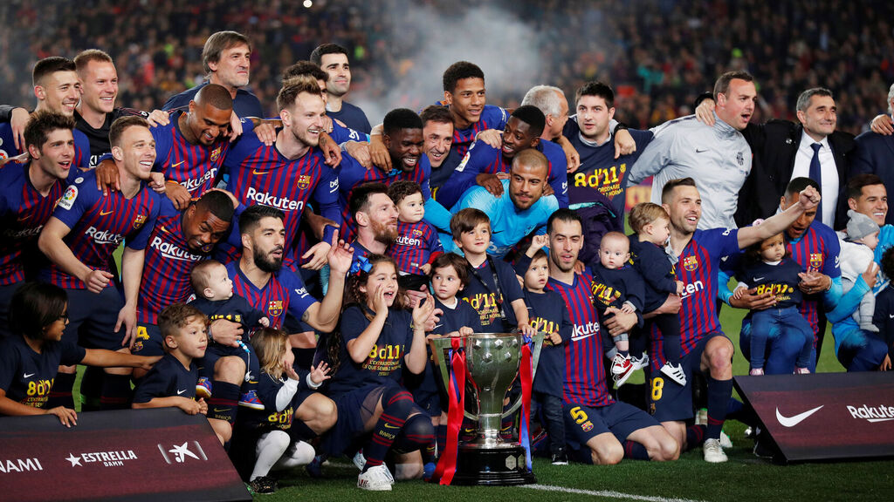
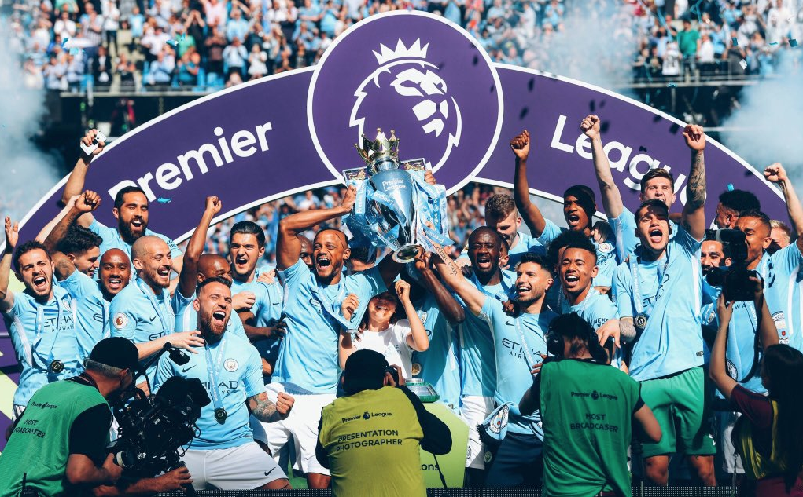
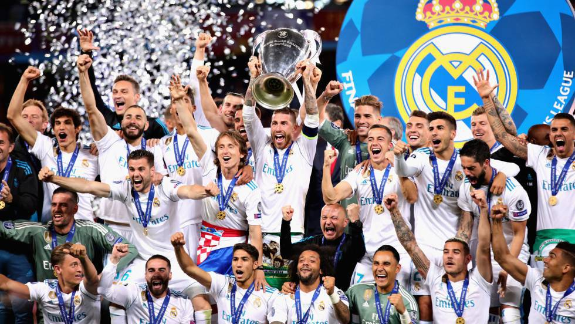
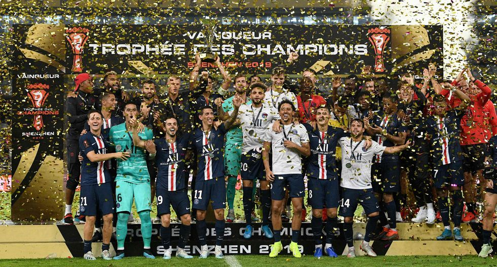

Lionel Messi
6 veces ganador del Balón de Oro, capitán del FCBarcelona y de la selección argentina.
En esta página vas a encontrar información de los 5 mejores eqiupos del mundo, como pueden ser sus últimos logros, su trayectoria y sus acciones destacadas.
Tras unos años en los que había bajado del escalón del primer nivel, vuelven al máximo.
El equipo de Anfield, ha evolucionado llevando al fútbol a otro nivel. Último ganador de la Champions League. Caracterizado por la intensidad y la solidaridad de todos sus jugadores, combinado con un increíble juego cuando disponen del balón. Su punto más fuerte son las contragolpes, dirigidos por sus 3 estrellas: Mané, Firmino y Salah, seguramente el trío ofensivo más fuerte del momento. En defensa, liderado por su gran estrella, y segundo finalista en el reciente Balón de Oro, Virgil Van Dijk, el mejor central del momento. Este equipo dispone de una generación de jugadores maravillosa, a la vez de un grandísimo entrenador, como es Jürgen Klopp, que le ha dado esta esencia al Liverpool, el equipo más letal.
Colocamos al Barça en segundo lugar de este ranking, ya que aunque durante los últimos años haya estado un poco desconcertado en las ediciones de UCL, sigue reinando en su país, en el cuál se ha alzado con 10 títulos de liga en los últimos 15 años, algo increíble y que lo pone en lo alto del país. Además de tener al mejor jugador del mundo, Leo Messi, lo que seguramente haga que este club se sitúe en tan alto lugar. Siempre caracterizado por su fútbol de posesión y dependencia del balón, algo que cada vez le es más complicado debido a las características de sus rivales, pero sigue fiel a su esencia.
Nos encontramos a uno de los equipos de Manchester, en este caso al flamante ganador de las dos últimas Premier League. El equipo dirigido por Pep Guardiola ha liderado el país en los últimos años, alzándose con todos los títulos posibles en Inglaterra, prácticamente sin rival que se le acercara. Aunque el último año apareciera el gran Liverpool, lograron la liga más disputada de la historia de este país, consiguiendo el título en la última jornada y por delante de los 'reds' por tan solo un punto. El fútbol inculcado por el catalán, se caracteriza por la posesión y el toque, para lo que dispone de una plantilla de primer nivel con grandes jugadores como son Kevin de Bruyne, Agüero o Bernardo Silva.
Llega el turno para el equipo blanco. Este equipo rompió la maldición logrando ganar más de 1 Champions seguida, pero no solo eso, sino que fue capaz de lograr 3 títulos consecutivos en la competición europea líder, algo histórico y que pasará a los grandes recuerdos de la histroria de este deporte, además de ser el equipo que más competiciones europeas posee(13). Todo ello conseguido de la mano de su ex-estrella Cristiano Ronaldo, y de un gran conjunto de jugadores como Sergio Ramos, o Modrić. Un equipo que logró resucitar el mítico Zinedine Zidane, y aunque en competiciones nacionales no tuvo el dominio, se hizo con Europa en los años 2016,2017 y 2018.
El club parisino que posee un gran potencial económico, se ha rodeado en los últimos de auténticas estrellas con el fin de alzarse con la tan esperada Champions. Su presidente Al-Khelaïfi, ha pagado 222 millones de € por el brasileño Neymar Jr, y poco después se hizo con los servicios de la perla francesa Kylian Mbappé a costa de 180 millones de €. Quiere realizar un proyecto ganador y poco a poco va consiguiendo su éxito. A nivel nacional lleva años ganándolo todo y siendo ampliamnete superior a sus rivales. La gran espinita de este club es la competición europea, en la que siempre hace mucho ruido, pero aún no ha terminado de lograr. Aún así, no hay que subestimar al PSG, ya que en cualquier momento la podría ganar y nadie se llevariá las manos a la cabeza, ya que dispone de un equipo lleno de talento.
¡Pulsa aquí si quieres ver las ventajas que tendrás al utilizar nuestra web! Además, dispondrás de todo tipo de información.
IREl futbolista argentino de la Juventus, Paulo Dybala ha anunciado este sábado que,
ha dado positivo en la pruebas de coronavirus a las que se ha sometido junto a su mujer, Oriana Sabatini.
Ha sido el propio futbolista el que aseguraba que los dos se encuentran en buen estado:
"Hola a todos, quería comunicarles que acabamos de recibir los resultados del test del Covid-19 y dimos positivo.
Por fortuna nos encontramos en perfecto estado. Gracias por sus mensajes y un saludo a todos".
Todos somos conscientes del interés del club azulgrana ante la nueva perla argentina,
y que ambos están cada vez más concienciados en que sus caminos se tienen que cruzar.
El agente del jugador, Alberto Yague, expresó recientemente que el deseo de Lautaro es jugar al lado de su compatriota e ídolo Leo Messi,
declaraciones que ponen en evidencia la preferencia del delantero, a quien también ha llamado el Real Madrid.
A dichas palabras respondió Javier Zanetti, vicepresidente del Inter, dejando claro que Lautaro "es feliz" en el Inter.
"Su futuro está aquí", comentó Zanetti.
La crisis por el coronavirus interrumpió La Liga hace un mes y concretamente los partidos correspondientes a la jornada 28
que debían disputarse el fin de semana del 13, 14 y 15 de marzo ya no llegaron a jugarse.
Ante esta situación no hay nada claro,
pero el pronóstico más optimista apunta a que la competición podría reanudarse la primera semana de junio y jugar todo junio
y julio para resituar las jornadas que el virus interrumpió.